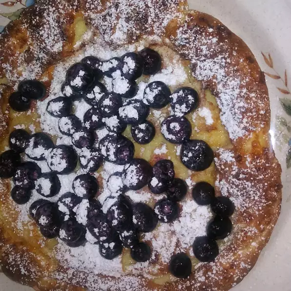

Baked Pancakes

Description
Oven baked pancakes are a tasty, easy, and fast breakfast.
Ingredients
- 3 tablespoons butter
- 1/2 cup all-purpose flour
- 1/2 cup milk
- 2 large eggs, beaten
- 1 teaspoon white sugar
- 1/4 teaspoon salt
- 1/4 lemon, juiced (optional)
- 1 tablespoon confectioners' sugar, or to taste (Optional)
Directions
- Preheat the oven to 425 degrees F (220 degrees C).
- Place butter into a 9-inch pie dish. Place in the preheating oven until butter is melted, 5 to 10 minutes.
- Whisk together flour, milk, eggs, white sugar, and salt in a bowl; pour mixture into hot butter in the dish.
- Bake in the preheated oven until the edges are light brown and a toothpick inserted into the center comes out clean, 20 to 24 minutes.
- Sprinkle lemon juice over pancake and dust with confectioners' sugar; serve warm.